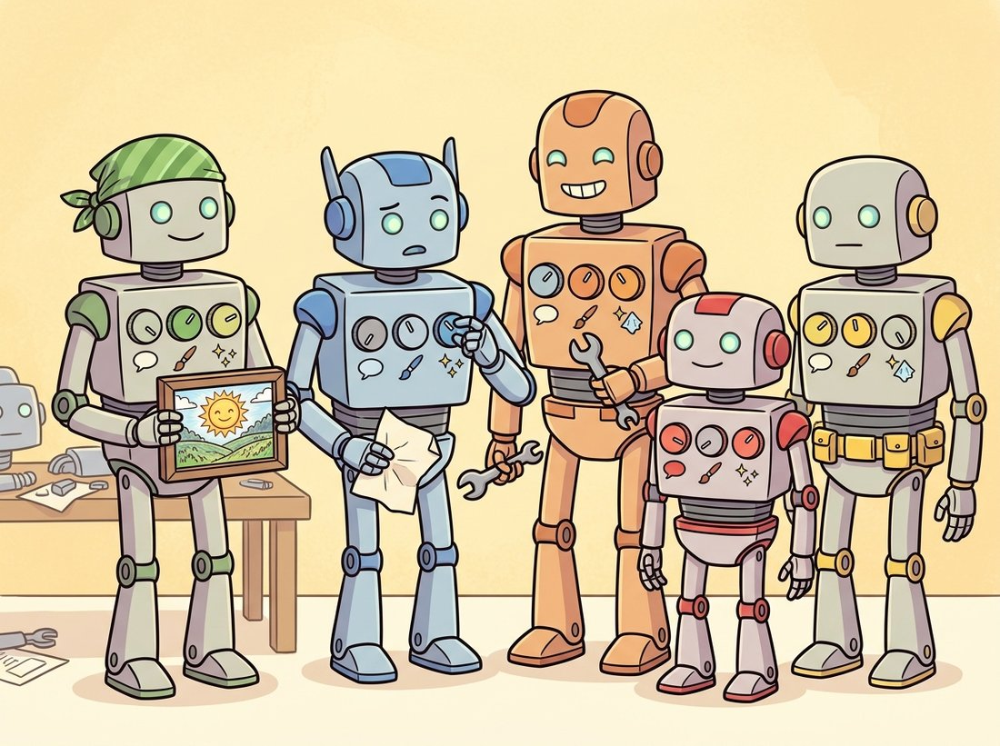

"We are not rivals. We are the same recipe arguing about which encoder to hire and how much to retouch the photos afterward. The benchmark leaderboard is just our group chat, made public."
A Family of Text-to-Image Models at an Awkward Reunion
Every named text-to-image system is the same three-station template of Section 34.2 with three knobs turned differently: which text encoder, which denoiser backbone, and how the training data and post-processing were curated. Once you read the landscape this way, DALL-E, Imagen, Stable Diffusion, Midjourney, and FLUX stop being competing magic boxes and become a small design space you can reason about. This section maps the major systems onto the template, explains which knob produces which observable strength, and gives you a basis for choosing a model before you waste an afternoon on the wrong one.
The previous two sections built the template: an encoder (Section 34.1) produces conditioning, a denoiser (Section 34.2) iterates in a latent, an autoencoder decodes. This section treats the template as fixed and varies the parts. The goal is not to memorize a feature list, which is stale within months, but to learn the axes along which systems differ so that a model released after this book is printed still slots into the same mental map.
1. The Three Knobs Beginner
Here is the surprise that makes the whole landscape tractable: nearly every visible difference between these systems, the prompt following, the signature look, the step count, traces to just three design choices. Learn the three and you can predict a system's strengths before you run it.
- Encoder. CLIP-only (tight visual grounding, weak compositionality), large language-model encoder like T5 (strong prompt following), or both. This is the single biggest driver of prompt-following quality, the encoder-ceiling argument of Section 34.1.
- Generator path. A two-stage prior-plus-decoder (unCLIP), a single conditional latent-diffusion U-Net, or a diffusion transformer trained with flow matching. (Rectified flow, which appears throughout this section, is the flow-matching variant from Chapter 33 that learns a near-straight path from noise to image, so generation needs fewer steps.) This drives sample quality, scaling behavior, and step count.
- Data and finishing. What captions the model trained on, what aesthetic filtering shaped the training set, and what post-processing (refinement, upscaling, safety filtering) runs at inference. This drives the intangible "look" and the prompt-vocabulary that works.
Table 34.3.1 places the major systems on these axes. Read it as a coordinate map, not a ranking: each system occupies a position chosen for a purpose.
| System | Text encoder | Generator path | Defining choice |
|---|---|---|---|
| DALL-E 2 (2022) | CLIP text | unCLIP prior + diffusion decoder | Generate a CLIP image embedding first, then decode it |
| Imagen (2022) | Frozen T5-XXL | Pixel cascade (base + 2 super-resolution) | A huge text-only encoder beats CLIP for prompt following |
| DALL-E 3 (2023) | (text encoder + recaptioning) | Latent diffusion | Train on long synthetic captions, not web alt-text |
| SD 1.5 / SDXL (2022-23) | CLIP (SDXL: two CLIP) | Latent diffusion U-Net (+ refiner) | Open weights, runs locally, vast fine-tune ecosystem |
| SD3 / SD3.5 (2024) | Two CLIP + T5 | Rectified-flow MMDiT | Joint image-text attention with flow-matching training |
| Midjourney (v6-v7) | proprietary | proprietary diffusion | Heavy aesthetic tuning; opinionated default look |
| FLUX.1 / FLUX.2 (2024-25) | CLIP + T5 (FLUX.2: a vision-language model) | Rectified-flow transformer | Leading open-weight quality; strong hands and text rendering |
2. DALL-E: Two Very Different Systems Under One Name Intermediate
DALL-E 2 and DALL-E 3 share a brand and almost nothing else, which is instructive. DALL-E 2 is the canonical unCLIP design: a prior network maps the CLIP text embedding to a CLIP image embedding, and a diffusion decoder generates an image from that image embedding. The two-stage split exploits CLIP's shared space directly (Section 34.1): generating in CLIP image-embedding space first, then decoding, was meant to give a clean handle on semantic content. In practice the prior added complexity and the binding problems of CLIP propagated through it.
DALL-E 3 abandoned that story and made a data argument instead. Its central finding is that prompt following is bottlenecked by training-caption quality: web alt-text is short and noisy, so a model trained on it learns sloppy text-image correspondence. DALL-E 3 trained a captioner to produce long, detailed, accurate captions for the training images, then trained the generator on those. The result follows complex prompts dramatically better, with no exotic architecture; the diffusion backbone is conventional. This is the clearest case in the landscape of the third knob (data and captions) dominating the first two.
For years the field tuned encoders and backbones while training on whatever captions the web supplied. DALL-E 3 showed that re-captioning the training set with a strong captioner can outperform an architecture change, because it directly improves the text-image correspondence the model learns from. When you fine-tune your own model in Section 34.6, the same lesson applies: descriptive, consistent captions on your training images matter as much as any hyperparameter.
3. Imagen and the Encoder Bet Intermediate
Imagen made the encoder argument concrete and won it. It used a frozen T5-XXL text encoder, never fine-tuned on images, and a cascade of pixel-space diffusion models: a base model at low resolution followed by two super-resolution diffusion stages (the diffusion upscaler thread from Chapter 33, itself a learned descendant of the classical super-resolution of Chapter 7). The headline result was that scaling the frozen text encoder improved image-text alignment more than scaling the diffusion model did, the empirical foundation for the T5 adoption you see in SD3 and FLUX. Imagen ran in pixel space rather than latent space, which made it expensive but sidestepped the VAE; later systems mostly chose the latent path for cost.
Stop and sit with how strange the Imagen result is. Given a fixed budget, the team's images got better faster by enlarging the text-only T5 encoder, a network trained purely on written language that never saw a single image, than by enlarging the diffusion model that actually paints the pixels. The component closest to the output was not the bottleneck; the component that understands the sentence was. This is the encoder-ceiling argument of Section 34.1 turned into a spending rule: when prompt following is the weak link, money spent on language understanding buys more picture quality than the same money spent on the painter. It is why every frontier system since, SD3, FLUX, and the multimodal models, pays for a heavyweight encoder it could in principle skip.
4. The Open Line: Stable Diffusion to FLUX Intermediate
The open-weight lineage is where most practitioners actually work, because the weights are downloadable and the fine-tuning ecosystem of Section 34.6 is built around it. Stable Diffusion 1.5 is the canonical latent-diffusion U-Net with a single CLIP encoder. SDXL scaled it up, added a second CLIP text encoder for richer conditioning, and introduced an optional refiner model that runs a few extra denoising steps to sharpen details. SD3, and its SD3.5 refresh (Stability AI, October 2024), made the generational jump: they replaced the U-Net with the MMDiT transformer of Section 34.2, trained with the rectified flow of Chapter 33, and conditioned on three encoders (two CLIP plus T5).
FLUX.1 (Black Forest Labs, August 2024), built by founders who had worked on the original Stable Diffusion, is a large rectified-flow transformer that set the open-weight bar on release. It repaired the two failure modes that long plagued the field: rendering legible text within images and producing correct hands. The open frontier has kept moving since: FLUX.2 (November 2025) pairs the rectified-flow transformer with a vision-language encoder, and competitive open models such as Qwen-Image and HiDream-I1 now trade the top spots on public arenas, so any single "strongest open model" claim is short-lived. The durable point is that they all sit at the same coordinates in Table 34.3.1. The illustration below makes the family resemblance literal: identical bodies, differently set dials.

You can load and run several of these from one library, which is the practical payoff of the shared template. The code below runs SDXL and SD3 through nearly identical calls.
import torch
from diffusers import StableDiffusionXLPipeline, StableDiffusion3Pipeline
# Run two generations of the same template through near-identical calls:
# SDXL (CLIP-only) and SD3 (CLIP + T5). The "OPEN" sign in the prompt is a
# deliberate stress test of the encoder difference between them.
prompt = ("a vintage bookstore at dusk, warm lamplight, a black cat on the "
"counter, a sign reading OPEN in the window")
# SDXL: latent-diffusion U-Net with two CLIP encoders.
sdxl = StableDiffusionXLPipeline.from_pretrained(
"stabilityai/stable-diffusion-xl-base-1.0",
torch_dtype=torch.float16).to("cuda")
img_sdxl = sdxl(prompt, num_inference_steps=30, guidance_scale=7.0).images[0]
# SD3: rectified-flow MMDiT with two CLIP encoders plus T5.
sd3 = StableDiffusion3Pipeline.from_pretrained(
"stabilityai/stable-diffusion-3-medium-diffusers",
torch_dtype=torch.float16).to("cuda")
img_sd3 = sd3(prompt, num_inference_steps=28, guidance_scale=7.0).images[0]
# The legible-sign prompt exposes the encoder gap: SD3's T5 reads "OPEN".
img_sdxl.save("bookstore_sdxl.png")
img_sd3.save("bookstore_sd3.png")diffusers interface. The only differences are the pipeline class and the step count; the template is identical. The "sign reading OPEN" clause is a deliberate stress test: SD3's T5 encoder renders short legible text far more reliably than SDXL's CLIP-only conditioning, the encoder gap of Section 34.1 made visible.That single code listing demonstrates the chapter's thesis: swapping a frontier system for its predecessor is a two-line change because both obey the template. The visible quality difference traces directly to the knobs in Table 34.3.1, not to incomparable architectures.
You do not even need to know which pipeline class a checkpoint wants. AutoPipelineForText2Image inspects the model's config and instantiates the right class, so the same three lines run SD 1.5, SDXL, SD3, or FLUX.
from diffusers import AutoPipelineForText2Image
import torch
# AutoPipeline reads the checkpoint's config and picks the right pipeline
# class, so the same three lines load SD 1.5, SDXL, SD3, or FLUX. Here it
# resolves FLUX.1-schnell, a distilled few-step model.
pipe = AutoPipelineForText2Image.from_pretrained(
"black-forest-labs/FLUX.1-schnell", torch_dtype=torch.bfloat16).to("cuda")
image = pipe("a black cat on a bookstore counter at dusk",
num_inference_steps=4).images[0] # schnell is a few-step modelAutoPipelineForText2Image.from_pretrained resolves FLUX.1-schnell to the correct class from its config. Note num_inference_steps=4: FLUX.1-schnell is a distilled few-step model (the step distillation of Chapter 33), so it generates in four steps where SDXL needs thirty.
With this pipeline loaded, sweep num_inference_steps across 1, 2, 4, and 8 on a fixed seed and watch how little the image improves past four steps; that flat curve is the distillation knob from the third column of Table 34.3.1 made tangible, and it is why a "few-step" model feels interactive while a thirty-step model does not.
5. Midjourney and the Aesthetic Knob Beginner
Midjourney is closed and undocumented, which makes it the perfect illustration of the third knob in isolation. Its architecture is presumably some diffusion variant, but its defining characteristic is the data and finishing: it is tuned hard toward a particular dramatic, painterly aesthetic, so even a bland prompt returns a polished, stylized image. This is a product decision, not an architectural one. The cost is control: the same aesthetic tuning that makes casual prompts look good fights you when you want a plain, literal, or documentary image. Understanding that Midjourney's "look" lives in the data-and-finishing knob, not in some secret architecture, tells you immediately why it excels at evocative concept art and struggles with neutral product photography, and why an open model with a neutral default is sometimes the better tool.
The "schnell" in FLUX.1-schnell is just German for "fast", named by its Black Forest Labs team after the actual Black Forest in southwest Germany. The naming honesty is refreshing in a field where models are otherwise called things like "unCLIP", "MMDiT", and "v1-5-pruned-emaonly-fp16". A useful survival skill for this landscape is to mentally translate every imposing product name back into its three knobs: the moment you can say "FLUX is a CLIP-plus-T5 rectified-flow transformer", the marketing evaporates and an engineering decision is left standing. The signature phrase for this whole section: same recipe, different knobs.
Who: An independent studio producing illustrated children's books, needing consistent characters across 30 pages and occasional legible signage in the art.
Situation: The team trialed Midjourney, SDXL, and an SD3-class model on the same brief over a week, judging on three axes: default art quality, character consistency across pages, and ability to render short readable words.
Problem: Midjourney produced the most beautiful single images but could not hold a character's face consistent across pages and refused to render the few words the book needed. SDXL held characters better once fine-tuned but also fumbled text. The brief genuinely needed all three capabilities.
Decision: They chose the open SD3-class model as the base for two template reasons: its T5 encoder rendered short signage legibly (the encoder knob), and its open weights allowed a per-character LoRA (low-rank adaptation, the fine-tuning method of Section 34.6) for cross-page consistency. They kept Midjourney only for one-off cover concepts where consistency did not matter.
Result: Character consistency, the hardest requirement, was solved by LoRA on the open model; legible text came free from the encoder choice. The most beautiful model on single images was the wrong tool for a multi-page book.
Lesson: Map the brief onto the three knobs before choosing. The requirement that decides the model is rarely raw single-image quality; here it was the encoder (for text) and openness (for fine-tuned consistency).
The landscape moves fast but along the same axes. FLUX.1 (Black Forest Labs, August 2024) and SD3.5 (Stability AI, October 2024) pushed open rectified-flow transformers to near-proprietary quality and largely solved in-image text and hands; FLUX.2 (November 2025) and open models such as Qwen-Image and HiDream-I1 have continued that climb. On the closed side, image generation has increasingly folded into multimodal language models: OpenAI's native 4o image generation (March 2025) and Google's Gemini 2.5 Flash Image, code-named Nano Banana (August 2025), collapse the encoder and generator into one model that reasons about the prompt, and edits by conversation, before drawing. OpenAI describes its system as autoregressive rather than diffusion, the convergence with the token-based generation of Section 34.4. The pace has not slowed: Google's Nano Banana Pro, built on Gemini 3 Pro (November 2025), pushes legible in-image text, identity consistency across several subjects, and 2K to 4K output further still, so the encoder-and-generator boundary this chapter draws keeps dissolving inside ever-larger multimodal models. Few-step distilled variants (FLUX schnell, SDXL Turbo, the latent consistency models of Chapter 33) have made high-quality generation interactive, turning the step-count knob from a fixed cost into a quality-latency dial. The through-line is that the three knobs of subsection 1 still explain the differences; only the settings have moved.
For each observed behavior, name which of the three knobs (encoder, generator path, data and finishing) is the most likely cause, and justify it: (a) a model renders gorgeous textures but cannot place "a blue cup to the left of a red book"; (b) a model produces flat, slightly generic compositions regardless of prompt; (c) a model nails complex multi-clause prompts but takes 50 steps to converge; (d) a model renders the word "BAKERY" on a storefront legibly. Then describe the cheapest experiment that would confirm each diagnosis.
Build a small harness using AutoPipelineForText2Image that takes a list of checkpoint names and a fixed prompt-and-seed, generates one image per model, and tiles them into a comparison grid with the model name captioned under each. Include at least one CLIP-only model (SD 1.5), one dual-CLIP model (SDXL), and one T5-conditioned model (SD3 or FLUX). Use a prompt that stresses compositionality and short in-image text. Does the grid reproduce the encoder gap predicted by Table 34.3.1?
DALL-E 2's unCLIP design generates a CLIP image embedding with a prior, then decodes it; SD-style systems condition the denoiser on text embeddings directly. (a) List one advantage the two-stage design was meant to provide and one disadvantage it introduced in practice. (b) Explain how a weakness in CLIP's text-image binding propagates differently through the two designs. (c) The field largely abandoned the explicit prior; argue from the encoder-ceiling principle of Section 34.1 why improving the encoder made the prior unnecessary.